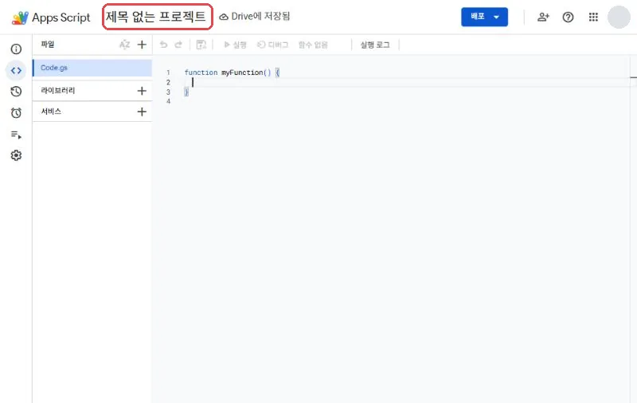
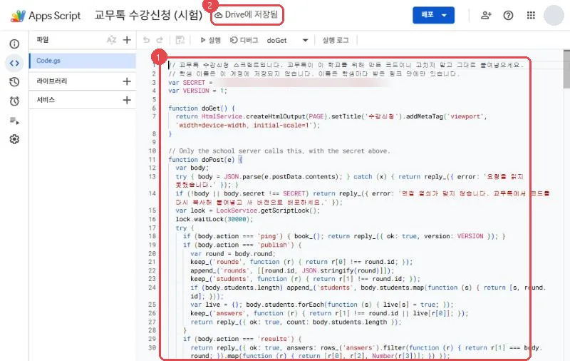
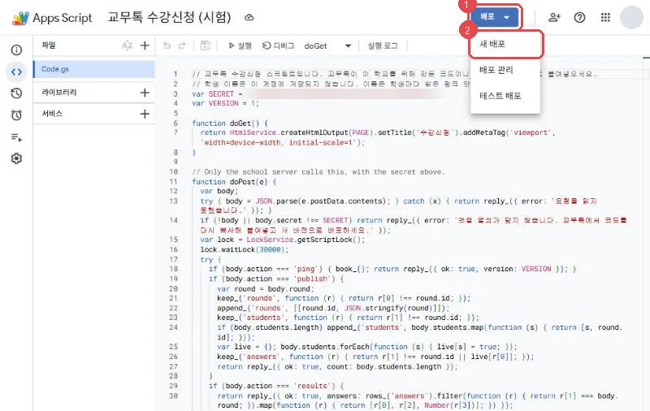
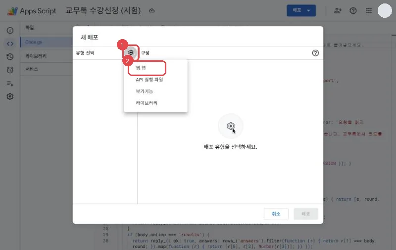
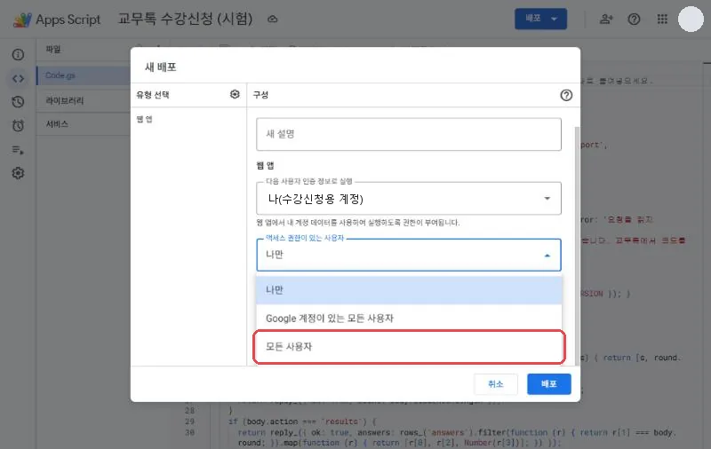
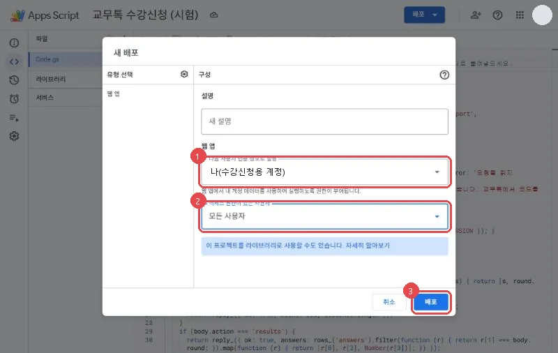
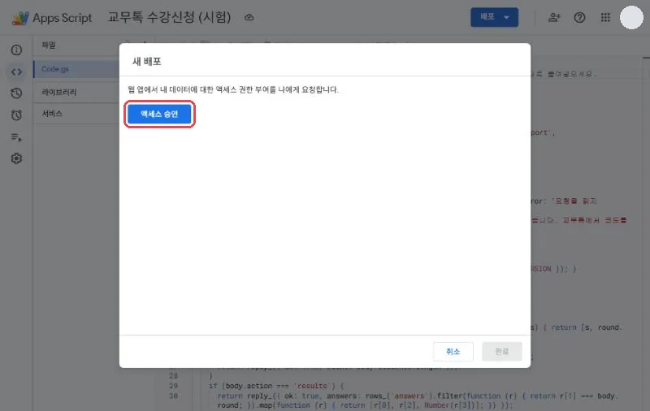
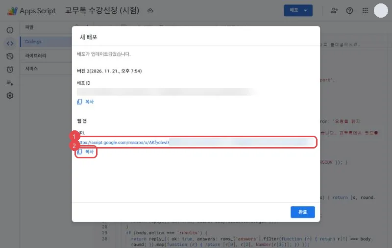
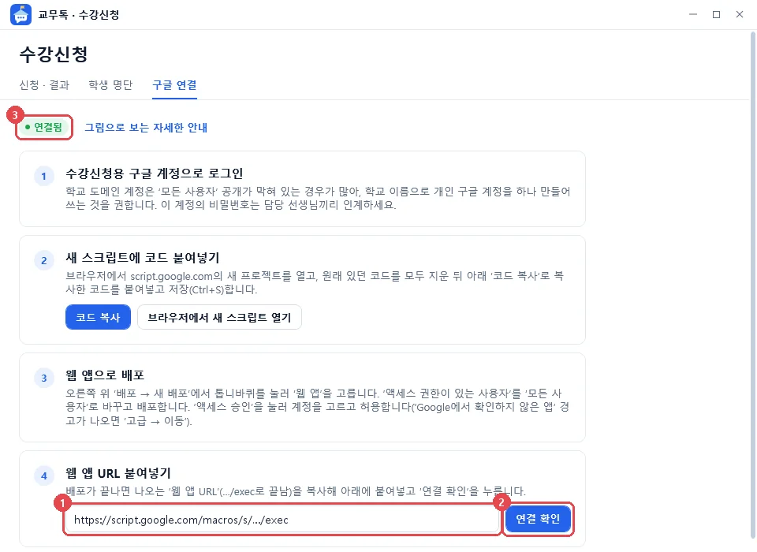
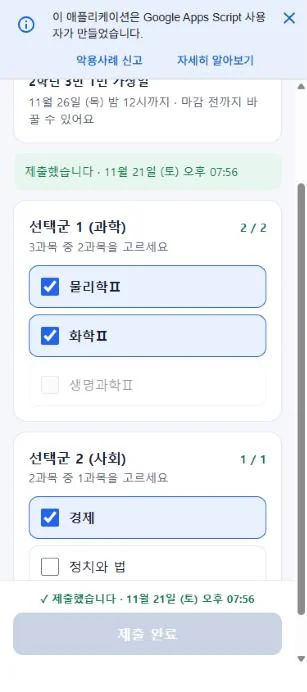

수강신청 구글 연결 안내
학교마다 처음 한 번만 하면 됩니다. 15분쯤 걸립니다. 이 안내를 옆에 띄워 두고 그림의 빨간 테두리를 순서대로 누르세요.
1수강신청용 구글 계정 준비
학교 이름으로 gmail 계정을 하나 만들어 두면 담당자가 바뀌어도 그대로 넘겨줄 수 있습니다.
gmail 계정을 만듭니다
예: ○○고 수강신청. 이미 있으면 그 계정을 씁니다.
브라우저에서 그 계정으로 로그인합니다
브라우저에 다른 구글 계정이 함께 로그인되어 있으면 엉뚱한 계정에 만들어지기 쉽습니다. 다른 계정은 로그아웃하거나, 크롬의 새 프로필에서 하세요.
2새 스크립트에 코드 붙여넣기
교무톡이 우리 학교 전용 코드를 만들어 줍니다. 고치지 말고 그대로 붙여넣습니다.
교무톡에서 브라우저에서 새 스크립트 열기를 누릅니다
구글 Apps Script 편집기가 새로 열립니다. 주소창에 script.google.com을 직접 넣고 새 프로젝트를 눌러도 같습니다.

코드를 붙여넣고 저장합니다
①처럼 코드가 // 교무톡 수강신청 스크립트입니다로 시작하고, ②에 Drive에 저장됨이 보이면 됩니다.

3웹 앱으로 배포
학생 휴대폰에서 열리도록 인터넷에 공개하는 단계입니다. 가장 많이 틀리는 곳이니 그림과 똑같이 맞춰 주세요.
오른쪽 위 배포 → 새 배포

① 톱니바퀴 → ② 웹 앱

‘액세스 권한이 있는 사용자’를 모든 사용자로 바꿉니다
처음에는 ‘나만’으로 되어 있습니다. ‘Google 계정이 있는 모든 사용자’가 아니라 맨 아래 ‘모든 사용자’입니다. 이것이 틀리면 학생에게 구글 로그인 화면이 뜹니다.

설정을 확인하고 배포를 누릅니다
① 다음 사용자 인증 정보로 실행: 나(수강신청용 계정) ② 액세스 권한이 있는 사용자: 모든 사용자 ③ 배포. ‘설명’은 비워 두어도 됩니다.

액세스 승인을 누르고 권한을 허용합니다

새 창이 열리면 다음 순서로 누릅니다. 이 단계는 처음 배포할 때 한 번만 나옵니다.
‘웹 앱 URL’을 복사합니다
배포가 끝나면 나오는 창에서 웹 앱 아래의 URL 옆 복사를 누릅니다. 주소는 https://script.google.com/macros/s/…/exec 모양입니다. ‘배포 ID’가 아니라 URL을 복사하세요.

4교무톡에 주소 넣기
교무톡 ‘구글 연결’ 화면 4번 칸에 붙여넣고 연결 확인을 누릅니다.

✓학생에게는 이렇게 보입니다
학생은 받은 링크를 휴대폰에서 누르기만 하면 됩니다. 로그인도, 앱 설치도 없습니다.
맨 위의 이 애플리케이션은 Google Apps Script 사용자가 만들었습니다 안내는 구글이 모든 웹 앱에 붙이는 문구입니다. 학생에게 오른쪽 X를 눌러 닫아도 된다고 알려 주세요.
학생 이름은 링크 안에 들어 있어 화면 위에 보입니다. 과목을 고르고 제출하기를 누르면 제출했습니다가 뜨고, 마감일 밤 12시까지 바꿀 수 있습니다. 결과는 교무톡 ‘신청 · 결과’에서 결과 새로고침을 누르면 들어옵니다.

↻교무톡 업데이트 뒤 다시 배포
교무톡이 업데이트되면서 스크립트가 바뀌면 ‘구글 연결’에 스크립트 다시 붙여넣기 필요가 표시됩니다. 그때만 하면 됩니다.
2단계처럼 코드를 다시 복사해 붙여넣고 저장합니다
예전에 만든 같은 프로젝트를 열어서 합니다. 새 프로젝트를 만들지 않습니다.
?문제가 생기면
교무톡 아래쪽에 뜬 문구를 찾아 오른쪽대로 해 보세요.
| ‘웹 앱 URL’을 그대로 붙여넣으세요 | 배포 ID나 편집기 주소를 넣은 경우입니다. 3단계 6번의 …/exec로 끝나는 URL을 넣으세요. |
|---|---|
| 구글 스크립트가 답하지 않습니다 | 3단계 4번 설정을 확인하세요. 실행은 나, 액세스는 모든 사용자여야 합니다. 설정을 바꿨다면 ‘배포 관리 → 수정 → 새 버전’으로 다시 배포합니다. |
| 연결 열쇠가 맞지 않습니다 | 다른 학교나 예전 코드를 붙여넣은 경우입니다. 교무톡에서 코드 복사를 다시 눌러 붙여넣고 새 버전으로 배포하세요. |
| 보안 도입 검토 기록에 수강신청 연결이 없습니다 | 학교 서버 관리자에게 보안 도입 검토 기록에 script.google.com, script.googleusercontent.com(443) 추가를 부탁하세요. |
| 구글에 연결하지 못했습니다 | 학교 서버 PC가 인터넷에 연결되어 있는지 확인하세요. 학교 방화벽이 구글을 막고 있으면 정보 담당 선생님께 문의하세요. |
| 연결은 되었지만 붙여넣은 코드가 옛 버전입니다 | 위의 ‘교무톡 업데이트 뒤 다시 배포’를 따라 하세요. |
학생이 이렇게 말해요
“링크를 여니 구글 로그인 화면이 나와요”
액세스 권한이 ‘모든 사용자’가 아닙니다. 3단계 3번을 확인하고 ‘배포 관리 → 수정 → 새 버전’으로 다시 배포하세요.
“링크가 잘렸어요라고 나와요”
링크 뒷부분(# 뒤)이 메신저에서 잘렸습니다. ‘링크 목록 저장’ 파일에서 그 학생 링크를 처음부터 끝까지 다시 복사해 보내 주세요.
“열 수 없는 링크예요라고 나와요”
신청이 지워졌거나 그 학생이 명단에서 빠진 경우입니다. 명단을 확인하고, 필요하면 학생을 다시 넣은 뒤 ‘링크 목록 저장’으로 새 링크를 보내세요.
“제출이 안 돼요 / 연결이 원활하지 않아요”
한꺼번에 많은 학생이 제출하면 구글이 잠깐 몰릴 수 있습니다. 화면이 알아서 몇 번 다시 시도합니다. 전교생이 한꺼번에 하기보다 반별로 시간을 나눠 안내하면 좋습니다.
“다른 친구 링크로 들어가졌어요”
링크는 학생마다 다르고, 링크를 가진 사람은 그 학생 이름으로 제출할 수 있습니다. 링크 목록 파일을 단체방에 올리지 말고 학생에게 하나씩 보내 주세요.